<meta name="claude:viewport-fit-sides" content="cover">
<title>WHT_IGA 검증 보고서</title>
<style>
:root {
  /* layout: single-column paper, 66ch measure, figures and tables break out to content width */
  --bg: #f6f6f3; --ink: #151a22; --muted: #566173; --rule: #d6d9de;
  --accent: #0f766e; --ok: #0f766e; --warn: #9a5b00; --fail: #b42318; --panel: #ffffff;
  --serif: "Noto Serif KR", "Batang", Georgia, serif;
  --sans: "Noto Sans KR", "Malgun Gothic", system-ui, sans-serif;
  color-scheme: light;
}
@media (prefers-color-scheme: dark) {
  :root:not([data-theme="light"]) {
    --bg: #12161d; --ink: #e7eaf0; --muted: #9aa4b5; --rule: #2a3240;
    --accent: #5fd0c4; --ok: #5fd0c4; --warn: #f0b35a; --fail: #ff8a7a; --panel: #1a202b;
    color-scheme: dark;
  }
}
:root[data-theme="dark"] {
  --bg: #12161d; --ink: #e7eaf0; --muted: #9aa4b5; --rule: #2a3240;
  --accent: #5fd0c4; --ok: #5fd0c4; --warn: #f0b35a; --fail: #ff8a7a; --panel: #1a202b;
  color-scheme: dark;
}
body { background: var(--bg); color: var(--ink); font-family: var(--serif); line-height: 1.7;
  padding-left: max(16px, env(safe-area-inset-left, 0px)); padding-right: max(16px, env(safe-area-inset-right, 0px));
  padding-block: 24px 48px; font-size: 16px; }
main { max-width: 66ch; margin: 0 auto; }
.wide { max-width: 980px; margin: 0 auto; }
h1 { font-family: var(--sans); font-size: 1.9rem; line-height: 1.25; margin: 0 0 .4rem; text-wrap: balance; }
.sub { font-family: var(--sans); color: var(--muted); font-size: .95rem; margin: 0 0 1.2rem; }
.meta { font-family: var(--sans); font-size: .85rem; color: var(--muted); border-top: 1px solid var(--rule); border-bottom: 1px solid var(--rule); padding: .6rem 0; margin-bottom: 1.6rem; }
h2 { font-family: var(--sans); font-size: 1.2rem; margin: 2.2rem 0 .6rem; color: var(--ink); }
h3 { font-family: var(--sans); font-size: 1rem; margin: 1.4rem 0 .4rem; }
p { margin: .7rem 0; }
.abstract { background: var(--panel); border: 1px solid var(--rule); padding: 1rem 1.1rem; border-radius: 4px; font-size: .95rem; }
.abstract b { font-family: var(--sans); }
.kw { font-family: var(--sans); font-size: .85rem; color: var(--muted); margin-top: .6rem; }
figure { margin: 1.4rem 0; }
figure img { display: block; width: 100%; max-width: 100%; height: auto; background: var(--panel); border: 1px solid var(--rule); border-radius: 4px; }
figcaption { font-family: var(--sans); font-size: .85rem; color: var(--muted); margin-top: .45rem; line-height: 1.5; }
.tablewrap { overflow-x: auto; margin: 1rem 0; border: 1px solid var(--rule); border-radius: 4px; background: var(--panel); }
table { border-collapse: collapse; width: 100%; font-family: var(--sans); font-size: .82rem; font-variant-numeric: tabular-nums; min-width: 640px; }
th, td { text-align: left; padding: .45rem .55rem; border-bottom: 1px solid var(--rule); vertical-align: top; }
th { font-weight: 600; background: color-mix(in srgb, var(--ink) 4%, var(--panel)); }
td.num, th.num { text-align: right; }
.tag { display: inline-block; font-family: var(--sans); font-size: .74rem; padding: .08rem .45rem; border-radius: 3px; border: 1px solid currentColor; white-space: nowrap; }
.t-pass { color: var(--ok); } .t-part { color: var(--warn); } .t-fail { color: var(--fail); } .t-na { color: var(--muted); }
.note { font-family: var(--sans); font-size: .88rem; color: var(--muted); border-left: 3px solid var(--accent); padding: .1rem .8rem; margin: 1rem 0; }
.warnbox { font-family: var(--sans); font-size: .9rem; border-left: 3px solid var(--warn); padding: .1rem .8rem; margin: 1rem 0; }
code { font-family: ui-monospace, Consolas, monospace; font-size: .85em; }
ol.refs { font-family: var(--sans); font-size: .85rem; padding-left: 1.3rem; color: var(--muted); }
.answer { font-family: var(--sans); font-size: .98rem; border: 1px solid var(--rule); background: var(--panel); padding: .8rem 1rem; border-radius: 4px; }
</style>

<main>
<h1>WHT_IGA 검증 보고서</h1>
<p class="sub">Kratos 기반 몰입형 IGA 솔버의 검증 예제 19건을 Coreform IGA 검증 매뉴얼 및 예제 문서와 비교한 결과</p>
<div class="meta">판 4 · 작성일 2026-11-24 · 원격 WonhoLee1/WHT_IGA main 231efc4 이후 · 작성 보조: Claude · 이전 판(11-22/23)의 V03·V06·V10 서술은 이 판에서 정정됨</div>

<section class="abstract">
<p><b>초록.</b> WHT_IGA는 Coreform IGA의 검증 매뉴얼 문제 14건과 예제 문제 5건을 같은 조건으로 재현하도록 설계되었다. 19개 대응 케이스 중 17건이 기록된 게이트와 Coreform 비교를 충족했고(그중 V07은 p=3 변형 경로, V09는 랜덤 응답 정의에 단서), 2건(V06, E04)이 조건부다. 이 판의 주요 변경은 다섯 가지다. (1) E03 유리-금속 밀봉에서 Coreform 증분 이력을 재현할 때 생기던 컷백 3회의 원인을 Kratos J2 반환 사상의 국소 허용치가 만드는 잔차 바닥으로 확정하고 해소했다. (2) V10 진동 보에 Kratos 일반화-α에 포함된 HHT를 적용해 두 Abaqus 적용 조건 모두 Coreform과 0.014 % 이내로 맞췄다. (3) V12 T3는 Coreform 방법(일관 용량 + 후진 오일러)을 재현해 Coreform 값이 재현 구간에 들어감을 보였다. (4) V06 p=1 최조 격자의 차이는 Coreform의 절단 셀 적분이 p=1 강성에 정확하지 않기 때문임을 문서 기반 재구성으로 보였다. (5) E04는 사용자 결정으로 ν = 0.495에서 정식화 수렴 검증으로 전환했다.</p>
<p class="kw">키워드: 등기하 해석, 몰입 경계, 절단 셀 적분, F̄/P0 혼합 정식화, HHT, 열-소성, Coreform 비교</p>
</section>

<h2>1. 서론</h2>
<p>등기하 해석(IGA) 솔버를 산업 문제에 쓰려면 기준 해석 결과와 비교하는 검증이 필요하다. Coreform IGA는 검증 매뉴얼과 예제 문서를 통해 문제 정의, 하중, 기준값, 일부 수치 결과를 공개한다. 본 연구는 이 공개 기준을 WHT_IGA가 재현하는지 확인한다. 메쉬 입력 파일과 Abaqus 저널은 공개 링크가 동작하지 않아 얻지 못했다. 따라서 Coreform 쪽 설정이 문서에 없을 때는 문서의 서술(적분 방식, 경계 처리, 시간 적분, 증분 범위)에서 이산화를 재구성하고, 재구성으로 결정할 수 없는 부분은 그렇다고 명시했다.</p>
<p>검증 기준은 세 종류다. (i) 해석해 또는 공식 기준값, (ii) Coreform이 공표한 수치 또는 허용 오차, (iii) 프로젝트 게이트(master-plan v2.1 §9). 게이트와 허용치는 측정값에 맞춰 바꾸지 않았다.</p>
<h2>2. 방법</h2>
<h3>2.1 대상 문제와 대응</h3>
<p>Coreform 검증 매뉴얼의 잎 노드 문제는 14건이다. 예제 문제는 5건이다. 이들을 WHT_IGA의 V01–V12와 E01–E05에 대응시켰다. 대응 관계는 명세 파일 <code>tests/verification/data/*.json</code>에 기록되어 있다.</p>
<div class="tablewrap"><table>
<thead><tr><th>Coreform 문제</th><th>종류</th><th>WHT_IGA 케이스</th><th>명세</th></tr></thead>
<tbody>
<tr><td>prescribed-displacement-cube</td><td>매뉴얼</td><td>V01</td><td>v01.json</td></tr>
<tr><td>roark-17p1-7a</td><td>매뉴얼</td><td>V02</td><td>v02.json</td></tr>
<tr><td>beam-bending</td><td>매뉴얼</td><td>V03</td><td>v03.json</td></tr>
<tr><td>bimetallic-beam-bending</td><td>매뉴얼</td><td>V04</td><td>v04.json</td></tr>
<tr><td>multiplanar-material-interfaces</td><td>매뉴얼</td><td>V05</td><td>v05.json</td></tr>
<tr><td>pressurized-sphere</td><td>매뉴얼</td><td>V06</td><td>v06.json</td></tr>
<tr><td>infinite-plate-with-hole</td><td>매뉴얼</td><td>V07</td><td>v07.json</td></tr>
<tr><td>contact-indenter</td><td>매뉴얼</td><td>V08</td><td>v08.json</td></tr>
<tr><td>cantilever-shock-vibration</td><td>매뉴얼</td><td>V09</td><td>v09.json</td></tr>
<tr><td>vibrating-beam</td><td>매뉴얼</td><td>V10</td><td>v10.json</td></tr>
<tr><td>nafems-p18-t1 (thermal strain)</td><td>매뉴얼</td><td>V11</td><td>v11.json</td></tr>
<tr><td>nafems-p18-t2 / t3 / t4 (heat)</td><td>매뉴얼</td><td>V12</td><td>v12.json</td></tr>
<tr><td>thin-plate-with-hole</td><td>예제</td><td>E01</td><td>e01.json</td></tr>
<tr><td>plate-with-hole-adaptivity</td><td>예제</td><td>E02</td><td>e02.json</td></tr>
<tr><td>glass-to-metal-seal</td><td>예제</td><td>E03</td><td>e03.json</td></tr>
<tr><td>nearly-incompressible-elasticity</td><td>예제</td><td>E04</td><td>e04.json</td></tr>
<tr><td>door-lock-assembly</td><td>예제</td><td>E05</td><td>e05.json</td></tr>
</tbody></table></div>
<p class="note">V-EXP, V-EXP-C(명시적 동역학), §10.4 교차검증, §10.5 SBM 비교는 Coreform 매뉴얼 문제가 아니므로 부록에 따로 적었다.</p>

<h3>2.2 비교 기준</h3>
<p>각 케이스의 판정은 문서에 기록된 게이트를 따른다. 상대 편차는 <code>(우리 값 − 기준값)/기준값</code>으로 정의했다. Coreform 공표값이 있으면 그 값과 비교했고, 없으면 해석해 또는 공식 기준값과 비교했다. 실행 조건(격자, 차수, 연속성)은 Coreform 명세와 같게 맞추었다. 맞추지 못한 경우는 결과 해석에 명시했다.</p>

<h3>2.3 실행 상태</h3>
<p>모든 케이스를 이번 판에서 다시 실행하지는 않았다. 아래 표는 2026-11-23~24에 실제로 실행한 범위다. 나머지 케이스의 값은 각 검증 문서의 기록을 인용했다.</p>
<div class="tablewrap"><table>
<thead><tr><th>실행 내용</th><th>결과</th></tr></thead>
<tbody>
<tr><td>격리 시험 + 단위 시험 전체 (<code>tests/test_isolation.py tests/unit</code>)</td><td>762 passed</td></tr>
<tr><td>E03 p=2 시험 파일 전체(분할, 자유 팽창, 3단계 게이트, Coreform 증분 이력 재현)</td><td>4 passed</td></tr>
<tr><td>V10 게이트(Bossak 2, HHT 2)</td><td>4 passed</td></tr>
<tr><td>V03 명세 입력 재실행(5개 하중 경우)</td><td>모두 게이트 안</td></tr>
<tr><td>V07 p=3 C⁰/P2 표준 격자(0.5/0.25/0.125)</td><td>게이트 충족, σ 기울기 2.58</td></tr>
<tr><td>V06 진단(Kratos 없는 독립 Galerkin, 적분·경계·형상 스윕)</td><td>scripts/review_20261124</td></tr>
<tr><td>E04 Cook 막 ν = 0.49999 (C¹ 16/32, C⁰ 16/32/64, p=3 8/16), ν = 0.495 (16/32/64)</td><td>3.2.4절</td></tr>
<tr><td>V12 T3 Coreform 방법 재현(1차원 등가)</td><td>3.2.3절</td></tr>
</tbody></table></div>

<h2>3. 결과</h2>
<h3>3.1 요약</h3>
<div class="tablewrap"><table>
<thead><tr><th>케이스</th><th>우리 결과</th><th>기준 (Coreform 또는 해석해)</th><th class="num">편차</th><th>게이트</th><th>판정</th></tr></thead>
<tbody>
<tr><td>E01 thin plate</td><td>σxx 크라운 3.8166e-6</td><td>Roark 3.7261e-6 (Coreform −8.7 %)</td><td class="num">2.43 %</td><td>≤ 5 %</td><td><span class="tag t-pass">충족</span></td></tr>
<tr><td>E02 plate adaptivity</td><td>크라운 오차 12.42→3.65→1.50 %</td><td>Roark</td><td class="num">1.50 % (L2)</td><td>단조 감소</td><td><span class="tag t-pass">충족</span></td></tr>
<tr><td>E03 glass-to-metal</td><td>Coreform 45 증분 재현: 45/45, 컷백 0, Newton 3–7회</td><td>Coreform 45 증분, 컷백 0</td><td class="num">증분 1.0배</td><td>≤ 2 × Coreform, 컷백 0</td><td><span class="tag t-pass">충족</span></td></tr>
<tr><td>E04 Cook 막 (ν = 0.495)</td><td>C⁰ 64×64 7.1327 mm; 극한 C⁰ 6.947 / C¹ 6.964</td><td>Coreform 기준값 없음(ν = 0.49999 값 6.98946)</td><td class="num">극한 0.24 %; C⁰ 64 +2.4 %</td><td>극한 일치 ≤ 1 % 및 최세 C⁰ ≤ 1 %</td><td><span class="tag t-part">조건부</span></td></tr>
<tr><td>E05 door lock</td><td>RF3 −46.763 kN</td><td>−46.946 kN (Coreform 곡선)</td><td class="num">0.39 %</td><td>≤ 5 %</td><td><span class="tag t-pass">충족</span></td></tr>
<tr><td>V01 prescribed cube</td><td>면 변위 오차 2.81e-6 / 5.17e-7 / 4.61e-7</td><td>Coreform 허용 1.51e-5</td><td class="num">허용 이내</td><td>Coreform 허용</td><td><span class="tag t-pass">충족</span></td></tr>
<tr><td>V02 Roark 노치판</td><td>크라운 σxx 4.3525e-6</td><td>Coreform 채택값 4.3175e-6</td><td class="num">0.81 %</td><td>문서 게이트</td><td><span class="tag t-pass">충족</span></td></tr>
<tr><td>V03 보 굽힘</td><td>끝단 전단 1.00595e-6 m (명세 입력)</td><td>Abaqus C3D20 1.00596e-6</td><td class="num">−0.001 %</td><td>≤ 5 %</td><td><span class="tag t-pass">충족</span></td></tr>
<tr><td>V04 이종 보</td><td>p=2 −0.0022034365 mm</td><td>Coreform −0.0022036041 mm</td><td class="num">−0.008 %</td><td>레벨 스윕</td><td><span class="tag t-pass">충족</span></td></tr>
<tr><td>V05 다중 재료 계면</td><td>7박스 공유 기저 = 단일체</td><td>EB 해</td><td class="num">1.28 %</td><td>≤ 2 %</td><td><span class="tag t-pass">충족</span></td></tr>
<tr><td>V06 가압 구</td><td>L0 p=1 u 1.02 %, 그 외 셀 허용 안</td><td>Coreform CSV 셀 허용(L0 p=1 u ≤ 0.8 %)</td><td class="num">L0 p=1 1.27배</td><td>CSV 셀 허용</td><td><span class="tag t-part">조건부</span></td></tr>
<tr><td>V07 Kirsch 판</td><td>p=3 C⁰/P2 σ 기울기 2.58 (p=2 P0 0.85)</td><td>Coreform 2.38, 계획 ≥ 2.2</td><td class="num">+0.20</td><td>3단계 오차 + 기울기</td><td><span class="tag t-pass">충족(변형)</span></td></tr>
<tr><td>V08 구형 압입</td><td>R1 F_N +0.24 %, R2 RMS 1.66 / 0.93 %</td><td>Hertz; Coreform 3.33 %, 1.59 / 2.23 %</td><td class="num">0.24 %</td><td>≤ 4 / 4.5 %</td><td><span class="tag t-pass">충족</span></td></tr>
<tr><td>V09 외팔보 충격</td><td>f₁ 81.506 Hz, RMS +0.33 %, 피크 +0.46 %</td><td>80.8 Hz; Abaqus 3.40e-4, 9.65e-4</td><td class="num">+0.87 %</td><td>±1 %, ≤ 2.29 %, ≤ 2.5 %</td><td><span class="tag t-pass">충족(단서)</span></td></tr>
<tr><td>V10 진동 보</td><td>HHT f₁ 24770.26 / 24705.50 Hz</td><td>Coreform 24768.6 / 24703.8 Hz (몸체맞춤)</td><td class="num">+0.007 %</td><td>&lt; 2 %, Coreform 대비 0.1 %</td><td><span class="tag t-pass">충족</span></td></tr>
<tr><td>V11 열변형률 개재물</td><td>σyy(D⁺) 51.072 MPa</td><td>해석해 50 MPa</td><td class="num">+2.14 %</td><td>문서 게이트</td><td><span class="tag t-pass">충족</span></td></tr>
<tr><td>V12 T2 정상 열</td><td>T_B 927.0076 K</td><td>Coreform 927.0032 K</td><td class="num">+0.0008 %</td><td>≤ 1 %</td><td><span class="tag t-pass">충족</span></td></tr>
<tr><td>V12 T3 과도 열</td><td>p=2 36.648 °C; p=1 Coreform 방법 37.169–37.392</td><td>NAFEMS 36.60; Coreform 37.254</td><td class="num">+0.13 % (p=2)</td><td>≤ 2 %</td><td><span class="tag t-pass">충족(방법 재현)</span></td></tr>
<tr><td>V12 T4 정상 열</td><td>T_E p=1 18.0927 °C</td><td>Coreform 18.0900 °C</td><td class="num">−1.13 % (NAFEMS)</td><td>≤ 3 %</td><td><span class="tag t-pass">충족</span></td></tr>
</tbody></table></div>
<p class="note">표 1. 19개 케이스 요약(V12는 T2·T3·T4를 따로 셈). “충족(변형)”은 Coreform과 다른 이산화 경로로 게이트를 충족했다는 뜻, “충족(단서)”는 Coreform이 정의를 공개하지 않은 항목에 가정이 들어갔다는 뜻이다.</p>

<figure>
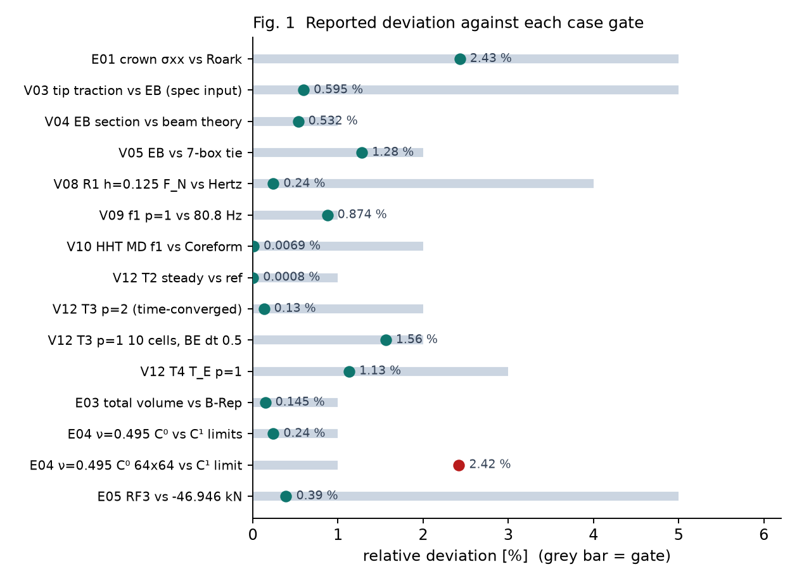
<figcaption>그림 1. 보고된 상대 편차와 게이트. 회색 막대는 허용 범위, 점은 편차다. 빨간 점(E04 C⁰ 64×64, ν = 0.49999)만 게이트 밖이며, E04는 3.2.4절에 따라 ν = 0.495 정식화 검증으로 전환했다.</figcaption>
</figure>

<h3>3.2 케이스별 해석</h3>
<h3>3.2.1 정역학 (V01–V07)</h3>
<p><b>V01–V02.</b> V01 면 변위 오차는 Coreform 허용 1.51e-5보다 작다. V02 크라운 σxx는 Coreform 채택값 대비 0.81 %다(그림 9).</p>
<p><b>V03 (보 굽힘) — 이전 판 정정.</b> 이전 판에서 “Coreform 하중 1.05배 불일치”로 적었던 차이는 우리 입력 오류였다. 스크립트가 E = 2.1e11과 끝단 하중 5e4 Pa를 썼고, 명세는 E = 2.0e11, 500 Pa다. 명세 값으로 다시 돌리면 끝단 전단 1.00595e-6 m로 Abaqus C3D20 1.00596e-6과 같고, 다섯 하중 경우 모두 EB 해 대비 0.6–0.8 %다. 그림 6은 명세 격자 스윕에서 Coreform과 우리 곡선이 겹침을 보여 준다.</p>
<figure>
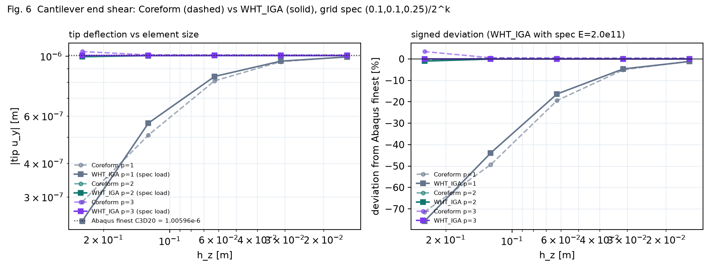
<figcaption>그림 6. 외팔보 끝단 전단(V03), 명세 격자 <code>(0.1, 0.1, 0.25)/2^k</code>, 명세 입력. p=2, 3은 모든 레벨에서 Abaqus 기준과 맞고, p=1은 Coreform과 같은 잠김 곡선을 따른다.</figcaption>
</figure>
<p><b>V04–V05.</b> V04 이종 보는 명세 격자 레벨 스윕에서 p=2, 3이 Coreform 병합 값과 0.002 % 이내다(그림 7). V05는 공유 기저 결과가 단일체와 같다.</p>
<figure>
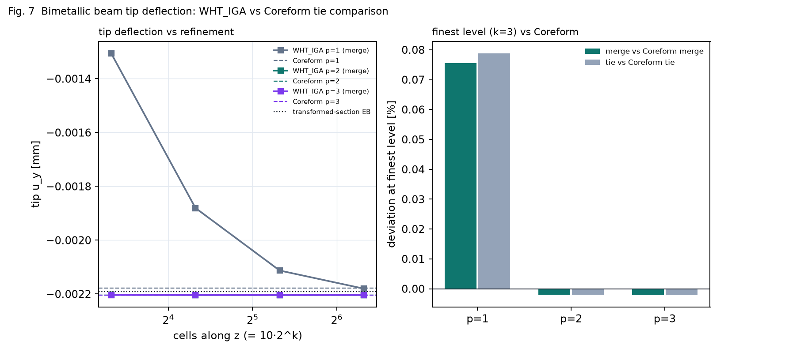
<figcaption>그림 7. 이종 보(V04) 끝단 변위, 명세 격자 <code>(5, 5, 10)/2^k</code>.</figcaption>
</figure>
<p><b>V06 (가압 구).</b> L0 p=1 셀만 Coreform 허용을 넘는다(u 1.02 % 대 허용 0.8 %, Coreform 0.584 %). 나머지 셀은 허용 안이고, p ≥ 2에서는 우리 오차가 Coreform보다 작다(그림 5). 원인을 다음 순서로 좁혔다.</p>
<ol>
<li><b>솔버 결함 배제.</b> Kratos 없이 같은 절단 셀 적분표에서 강한 대칭과 정확한 구면 압력으로 직접 푼 Galerkin 해, 그리고 에너지 투영이 모두 1.007 %다. Kratos 해(1.01–1.02 %)와 같으므로 하중·경계·솔버 결함은 없다. 같은 공간의 L2 최적 근사는 0.085 %다.</li>
<li><b>이산 공간은 같다.</b> Coreform의 Abaqus 요소 2,860 / 절점 2,195에는 하중·경계용 SFM3D3 표면 요소가 들어간다. 활성 셀 343은 우리와 같고(우리 352 중 9개는 보정 테셀레이션이 r = 1 밖으로 살짝 나가 생긴 미소 셀), 배경 격자 (N+2p)³의 패딩은 p=1 공간을 바꾸지 않는다.</li>
<li><b>오차 형태.</b> 축 근처(대칭면 교선) u_r −2.2 %, 대각선 +1.5 %인 입방 조화(x⁴+y⁴+z⁴ 형) 격자 방향 모드다. 전역 평균 u_r은 −0.085 %로 작다.</li>
<li><b>기각한 가설.</b> 벌점 대칭(Coreform API의 <code>bc_penalty_value</code>): β를 줄이면 u 오차가 18 %까지 커지기만 한다. 테셀레이션 해상도·보정: 개선 없음.</li>
<li><b>확인한 기제: 절단 셀 적분.</b> p=1 강성에 정확한 규칙(q=2)과 과소 적분(q=1) 사이에서 Coreform의 네 오차(u, u_r, σrr, σθθ)가 모두 같은 비율 위치에 놓인다(그림 10). Coreform 변형(regproj, wt2)은 q=1 쪽으로 더 간다. 즉 Coreform의 절단 셀 적분은 p=1 강성에 정확하지 않으며, 그래서 변위 오차는 작고 응력 오차는 크다. 우리 정확 적분 해는 에너지 최적이라 응력 오차가 Coreform보다 작다.</li>
</ol>
<div class="tablewrap"><table>
<thead><tr><th>L0 p=1 (Lamé 해석해 대비 L² 상대오차, %)</th><th class="num">u</th><th class="num">u_r</th><th class="num">σrr</th><th class="num">σθθ</th></tr></thead>
<tbody>
<tr><td>이론값 (Lamé 해석해)</td><td class="num">0</td><td class="num">0</td><td class="num">0</td><td class="num">0</td></tr>
<tr><td>Coreform h0p1</td><td class="num">0.584</td><td class="num">0.568</td><td class="num">28.5</td><td class="num">1.89</td></tr>
<tr><td>Coreform regproj / wt2</td><td class="num">0.421 / 0.418</td><td class="num">0.409 / 0.405</td><td class="num">30.4</td><td class="num">1.98</td></tr>
<tr><td>우리 정확 적분 q=2 (채택)</td><td class="num">1.007</td><td class="num">0.984</td><td class="num">24.6</td><td class="num">1.62</td></tr>
<tr><td>우리 과소 적분 q=1 (진단용)</td><td class="num">0.252</td><td class="num">0.242</td><td class="num">33.3</td><td class="num">2.09</td></tr>
<tr><td><b>Coreform 허용치</b> (h0p1 행 / 변형 행)</td><td class="num">0.8 / 0.6</td><td class="num">0.8 / 0.6</td><td class="num">40 / 45</td><td class="num">2.5 / 2.8</td></tr>
</tbody></table></div>
<p class="note">표 2. V06 L0 p=1 칸. 해석해 값(E = 1, ν = 0, 내압 1e-6): u_r 4.082e-6(r = 0.9) / 4.035e-6(r = 1), σrr −1.0e-6 / 0, σθθ 4.535e-6 / 4.035e-6.</p>
<p><b>Coreform도 근사다.</b> 세 결과 모두 해석해에서 떨어져 있다. Coreform은 변위가, 우리는 응력이 해석해에 더 가깝고, 같은 격자에서 우리 해는 에너지 기준 최적해(Galerkin 투영)다. Coreform 허용치는 독립된 정확도 한계가 아니라 Coreform 자체 결과에 1.3–1.5배 여유를 준 회귀 한계다(0.8/0.584 = 1.37, 40/28.5 = 1.40 등). 그래서 이 칸의 실패는 우리 해가 부정확하다는 뜻이 아니라, 다른 절단 셀 적분을 쓴 결과가 Coreform 기준 띠 밖이라는 뜻이다. 우리 변위는 허용치의 1.26배, 응력은 0.62–0.65배다. 격자를 세분하면 두 쪽 모두 해석해로 수렴하고, p ≥ 2에서는 우리 오차가 더 작다.</p>
<p>Coreform 적분 규칙은 문서에 없다. q=1을 쓰면 L0 네 값이 모두 허용 안에 들지만 L1 σrr(20.8 % 대 20 %)을 넘어 일관된 재구성이 아니고, 근거 없는 과소 적분 채택은 게이트 맞추기가 되므로 채택하지 않았다. 잠정 결정: 정확 적분(q=2)을 표준으로 유지하고 이 칸은 조건부로 둔다(Coreform 규칙이 공개되면 재검토).</p>
<figure>
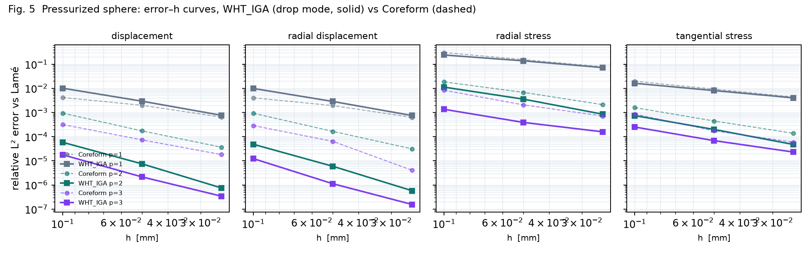
<figcaption>그림 5. 가압 구(V06) 상대 L² 오차의 격자 수렴. 실선은 WHT_IGA, 점선은 Coreform CSV. 허용을 넘는 셀은 p=1 L0의 변위뿐이다.</figcaption>
</figure>
<figure>
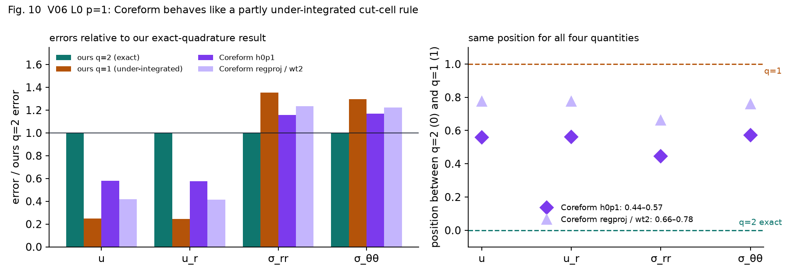
<figcaption>그림 10. V06 L0 p=1. 왼쪽: 우리 정확 적분(q=2) 오차로 나눈 오차. 과소 적분(q=1)과 Coreform 모두 변위 오차는 작고 응력 오차는 크다. 오른쪽: 각 양에서 Coreform 값이 q=2(0)와 q=1(1) 사이 어디에 있는지. 네 양이 h0p1은 0.44–0.57, regproj·wt2는 0.66–0.78로 거의 같은 위치에 있다. 한 가지 원인(적분 정확도)으로 네 양이 함께 움직였다는 근거다.</figcaption>
</figure>
<p><b>V07 (Kirsch 판, ν = 0.49999).</b> Coreform과 같은 p=2 P0 F̄ 경로의 응력 기울기는 0.85로, 셀 상수 압력의 O(h) 한계 때문에 2 이상이 될 수 없다. p=3 C⁰ 변위와 P2 압력 경로를 명세 표준 격자 0.5/0.25/0.125에서 돌리면 e_u 1.98e-4 / 1.89e-5 / 1.41e-6, e_σxx 2.54e-3 / 4.77e-4 / 7.11e-5로 전 레벨 게이트를 충족하고 σ 기울기는 2.58이다(그림 4). 판정은 이 변형 경로로 충족이다.</p>
<figure>
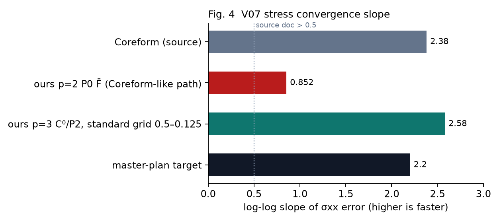
<figcaption>그림 4. V07 응력 수렴 기울기. p=3 C⁰/P2(표준 격자)는 2.58로 Coreform 2.38과 계획 목표 2.2를 넘는다. p=2 P0 경로는 0.85다.</figcaption>
</figure>

<h3>3.2.2 접촉과 동역학 (V08–V10)</h3>
<p><b>V08 (구형 압입).</b> NLGEOM h = 0.125에서 F_N은 Hertz 대비 +0.24 %로 Coreform 3.33 %보다 해석해에 가깝다. 미끄럼 단계 RMS는 F_N 1.66 %, F_T 0.93 %다(그림 2).</p>
<figure>
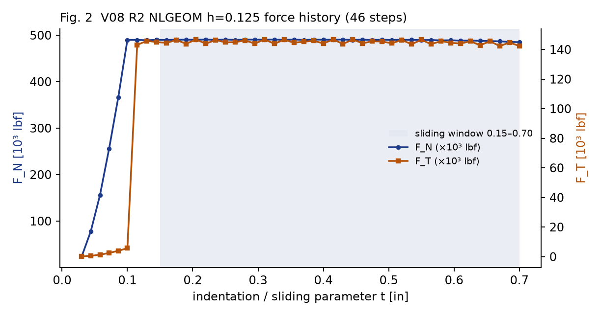
<figcaption>그림 2. V08 R2 h = 0.125 NLGEOM 힘 이력. 음영은 미끄럼 평가 구간.</figcaption>
</figure>
<p><b>V09 (외팔보 충격·랜덤).</b> Coreform과 같은 p=1 25 mm 격자에서 f₁ +0.87 %, 랜덤 RMS +0.33 %, 충격 피크 +0.46 %다. 랜덤 sweep에는 Abaqus 매뉴얼의 bias 식을 썼다(단서).</p>
<p><b>V10 (진동 보) — HHT 적용.</b> Kratos의 구조 동해석 솔버는 Newmark, Bossak, BDF, 준정적, 완화만 제공한다. 그러나 Kratos core의 <code>TimeDiscretization::GeneralizedAlpha(αm, αf)</code>는 β = ¼(1−αm+αf)², γ = ½−αm+αf로 HHT를 특수형(αm = 0, αf = −α)으로 포함한다. 이 클래스는 Python 바인딩이 없어 계수 식을 옮겨 선형 적분기로 구현했고, αf = 0이면 기존 Bossak과 같다. Abaqus 적용 조건(TRANSIENT_FIDELITY α = −0.05, MODERATE_DISSIPATION α = −0.41421)으로 f₁은 24770.26 / 24705.50 Hz이며 Coreform 몸체맞춤 대비 +0.007 %, 침지 대비 +0.014 %다. 이전 판의 MODERATE −0.40 % 차이는 Bossak을 쓴 탓이었다(그림 11). 축 모드의 모달 주파수와 감쇠율은 HHT 증폭행렬 이론과 일치한다. Abaqus 이력(변위·위상)의 직접 비교는 자료가 없어 하지 못했다.</p>
<figure>
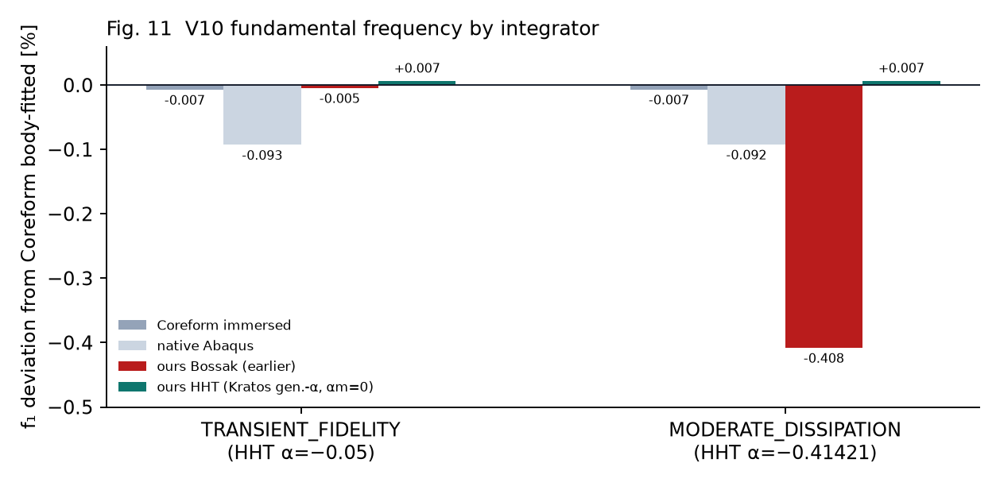
<figcaption>그림 11. V10 f₁의 Coreform 몸체맞춤 대비 편차. HHT(초록)는 두 조건 모두 Coreform IGA 결과와 0.014 % 안이다. 이전 Bossak(빨강)은 MODERATE에서 −0.41 %였다.</figcaption>
</figure>

<h3>3.2.3 열 (V11–V12)</h3>
<p><b>V11.</b> 계면 바깥 응력 51.072 MPa, 해석해 대비 +2.14 %다(Nitsche 계면 결합).</p>
<p><b>V12.</b> T2는 Coreform과 0.0008 %, T4는 Coreform 18.0900 °C와 같은 수준이다. T3는 p=2에서 NAFEMS 대비 +0.13 %로 게이트를 통과한다. Coreform과 같은 선형 10셀 격자는 시간 수렴 해가 +2.32 %(공간 오차)다. Coreform 방법(10×1×1 선형 C⁰, Abaqus 과도 열전달 = 후진 오일러, 증분 0.1–0.5 s)을 1차원 등가로 재현하면 일관 용량에서 37.169–37.392 °C이고 Coreform 37.254는 이 구간 안이다. 집중 용량은 35.7–35.9 °C로 멀다. 실제 증분 수열(Abaqus DELTMX)은 문서에 없다. 사용자 결정에 따라 “방법 재현 충족”으로 판정했다(그림 12).</p>
<figure>
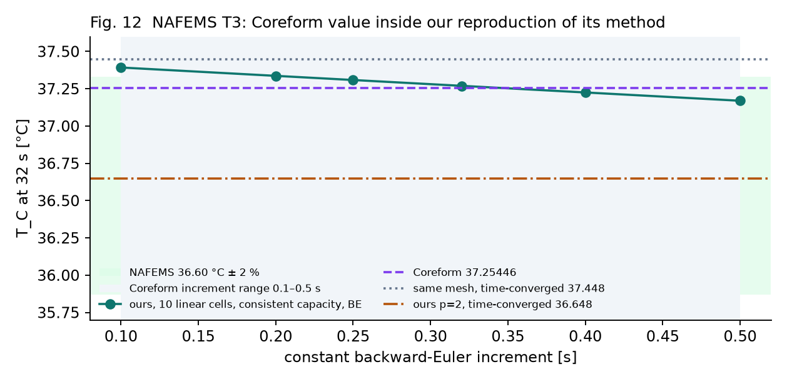
<figcaption>그림 12. NAFEMS T3 점 C, 32 s. 선형 10셀 일관 용량 후진 오일러의 증분별 결과(초록)가 Coreform 증분 범위(음영)에서 Coreform 값(보라 점선)을 지난다.</figcaption>
</figure>

<h3>3.2.4 예제 문제 (E01–E05)</h3>
<p><b>E01–E02.</b> E01 크라운 오차 2.43 %로 Coreform(−8.7 %)보다 Roark 해에 가깝다. E02는 적응 세분화로 오차가 단조 감소하고 L2에서 균일 격자 대비 약 6.7배 적은 자유도를 쓴다.</p>
<p><b>E03 (유리-금속 밀봉).</b> Coreform 수렴 이력의 수락 증분 45개(단계당 15)를 그대로 재현하면, 허용치 1e-8에서 가열 단계 첫 증분(크기 0.01) 근처에서 컷백 3회가 났다. 금속 소성을 끄면 사라지고, Newton 잔차는 발산이 아니라 4e-7–1e-6에서 정체했다. 원인은 Kratos J2 반환 사상이 국소 반복을 F ≤ 1e-4·threshold에서 멈추는 데서 오는 전역 잔차 바닥이며, Kratos 잔차 기준이 증분 초기 잔차 대비 비율이라 작은 증분에서 이 바닥이 1e-8보다 커진다. Coreform 쪽은 Abaqus/Standard 기본 수렴 제어(시간 평균 힘의 5e-3)이고 증분당 평형 반복은 1–2회다. 허용치를 바닥 위인 1e-6(Abaqus 기본보다 5,000배 엄격)으로 두면 45/45 수락, 컷백 0, Newton 3–7회이고, 세 단계 끝의 응력과 PEEQ는 1e-8 실행과 최대 3.1e-8 상대 차이로 같다(그림 8). 게이트 정의는 바꾸지 않았다.</p>
<figure>
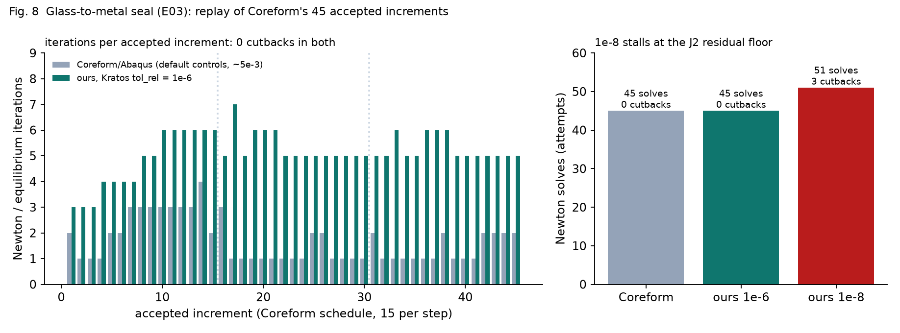
<figcaption>그림 8. E03, Coreform 수락 증분 45개 재현. 왼쪽: 증분별 반복 수(회색 Coreform 평형 반복, 초록 우리 Newton 반복, 허용 기준이 다름). 오른쪽: Newton 풀이 횟수와 컷백. 1e-8은 잔차 바닥에서 정체해 컷백 3회가 생긴다.</figcaption>
</figure>
<p><b>E04 (Cook 막).</b> 원래 조건 ν = 0.49999에서는 우리 게이트 정식화(C¹)가 기준 6.98946 대비 +0.70 %(16×16), −0.08 %(32×32)였지만, Coreform이 명시한 정식화(p=2 C⁰ 변위 + 셀 상수 압력)는 64×64에서도 +1.62 %로 수렴이 느렸다. 사용자 결정으로 ν = 0.495(압축성 Neo-Hookean, NLGEOM, F̄/P0)로 바꿨다. 이 ν에는 Coreform 값이 없으므로 계산 전에 판정 기준을 정했다: C⁰와 C¹ 외삽 극한이 1 % 안에서 일치하고, 최세 C⁰가 C¹ 극한과 1 % 안일 것.</p>
<ul>
<li>C¹: 7.0694 / 7.0144 / 6.9880 (16/32/64), 차수 1.06, 극한 6.964. C⁰: 7.6482 / 7.3080 / 7.1327, 차수 0.96, 극한 6.947. 두 극한의 차이는 0.24 %로 첫 기준을 충족한다. Coreform 정식화는 같은 해로 수렴한다.</li>
<li>C⁰ 64×64는 C¹ 극한 대비 +2.4 %로 둘째 기준을 넘는다. 차수 약 1이므로 128×128에서 약 +1.2 %가 예상된다(사용자 결정으로 보류).</li>
<li>ν를 0.49999에서 0.495로 바꿔도 값이 거의 같다(C⁰ 16×16: 7.622 대 7.648). 느린 수렴은 비압축성이 아니라 고정단 모서리 특이점에서 온다.</li>
<li>Kratos 기본 요소(16×16): Total Lagrangian Neo-Hookean p=1은 5.082 mm(극한 대비 −27 %, 체적 잠김), p=2는 6.787 mm(−2.5 %). Kratos의 Q1P0 혼합 요소는 IGA 셀 기하에서 ν = 0.495에서도 NaN이다(S39와 같음). 따라서 잠김 방지(Coreform의 USE_LOCKING_FREE에 해당)는 우리 F̄/P0 구현으로 한다.</li>
</ul>
<p>판정은 조건부다(그림 3).</p>
<figure>
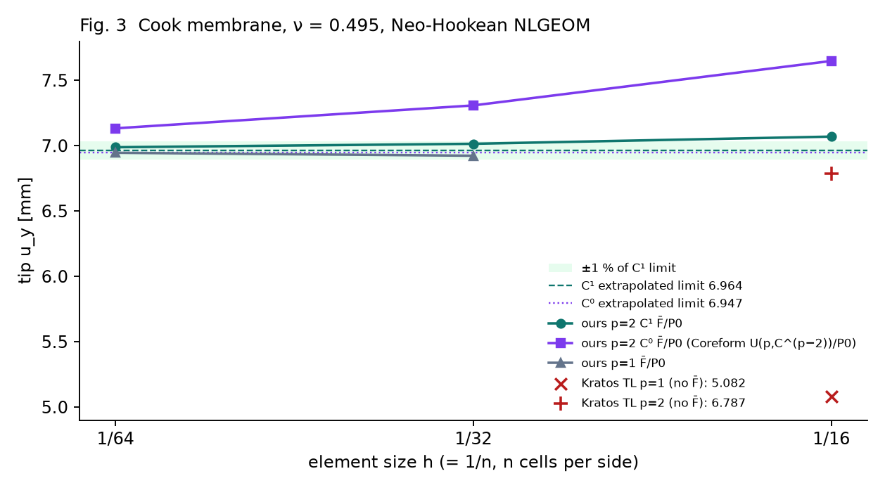
<figcaption>그림 3. Cook 막 끝 변위, ν = 0.495, Neo-Hookean NLGEOM. 초록 C¹과 보라 C⁰(Coreform 정식화)의 외삽 극한(점선)이 0.24 % 안에서 일치하지만, C⁰ 64×64는 아직 ±1 % 띠 밖이다. 빨간 표시는 잠김 방지가 없는 Kratos 기본 요소(16×16).</figcaption>
</figure>

<p><b>E05 (도어 락).</b> 실제 Coreform SAT 형상에서 RF3 −46.763 kN, 기준 대비 0.39 %, 힘-변위 곡선은 0.39–3.71 % 안이다(이전 기록).</p>

<h3>3.3 3D CAD 예제 결과 그림 (E03, E05)</h3>
<p>두 예제를 다시 실행해 결과 필드를 실제 CAD 표면(E03 STEP, E05 SAT 테셀레이션)에 입혔다. 변위는 스플라인 장을 CAD 꼭짓점에서 계산한 값이다. 응력과 PEEQ는 Kratos 적분점 값이며, 표면 점이나 단면 격자점은 같은 부품에서 가장 가까운 적분점 값을 받는다. E03은 거친 개발용 배경 격자(9×6×6 셀, 약 3 mm)라 응력이 셀 크기로 얼룩져 보인다. 다시 실행한 결과의 최대값과 반력은 게이트 기록과 같다(E03 20 °C: 핀 von Mises 252.04 MPa, 유리 최대 주응력 100.85 MPa; E05 RF3 −46.763 kN). 전체 그림(E03 44장, E05 12장)과 VTP 필드는 <code>docs/phase5/evidence/e03</code>, <code>e05</code>에 있다.</p>
<figure>
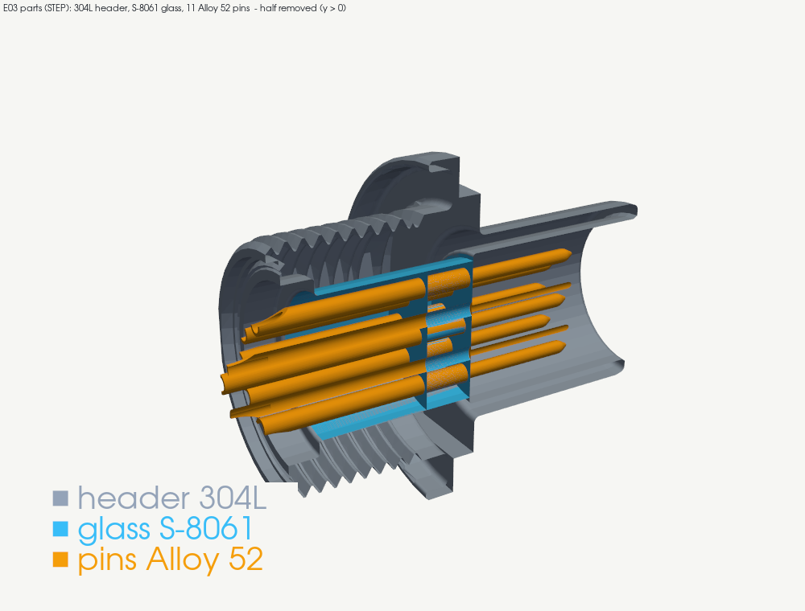
<figcaption>그림 13. E03 유리-금속 밀봉 커넥터(STEP): 304L 헤더, S-8061 유리, Alloy 52 핀 11개. 절반을 잘라 핀을 감싼 유리를 보였다.</figcaption>
</figure>
<figure>
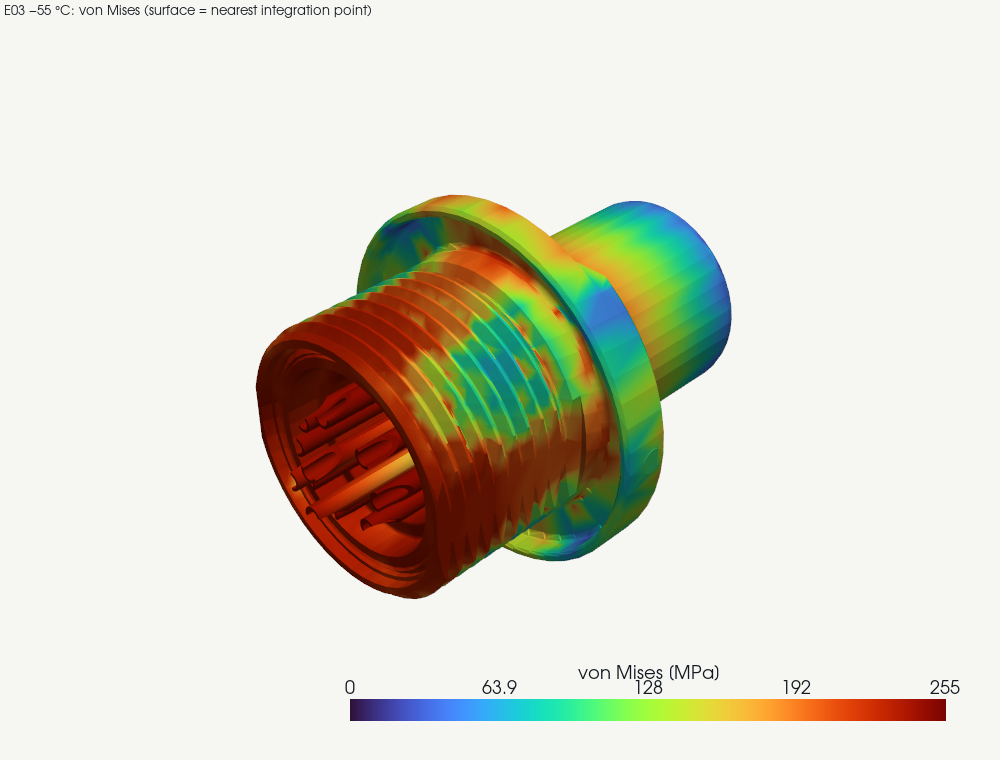
<figcaption>그림 14. E03, −55 °C 단계 끝 von Mises 응력. 금속 앞쪽(나사부)과 핀이 항복 근처에 있다.</figcaption>
</figure>
<figure>
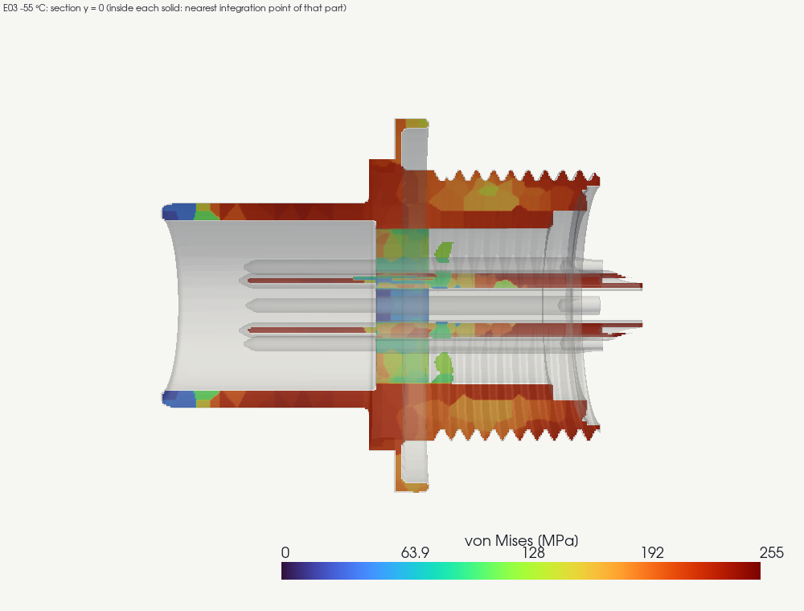
<figcaption>그림 15. E03, −55 °C, y = 0 단면 von Mises. 각 고체 안의 단면 격자점이 그 부품의 가장 가까운 적분점 값을 받는다. 유리 오른쪽의 작은 얼룩 몇 개는 유리 구멍 근처의 내부 판정 오류다.</figcaption>
</figure>
<figure>
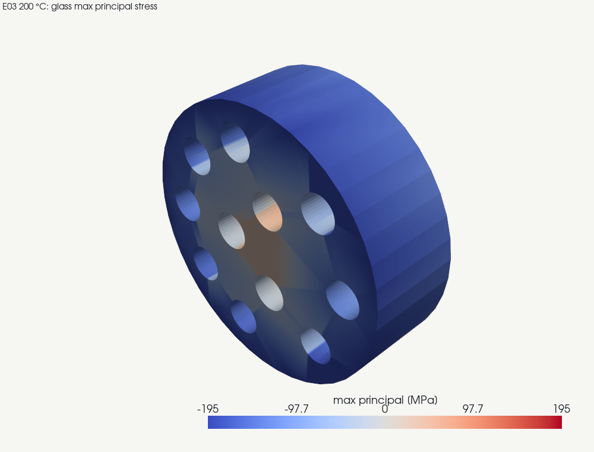
<figcaption>그림 16. E03, 200 °C, 유리 최대 주응력(파랑 압축, 빨강 인장). 유리는 대부분 압축이며 가운데 핀 주변에 인장이 생긴다(최대 118 MPa).</figcaption>
</figure>
<figure>
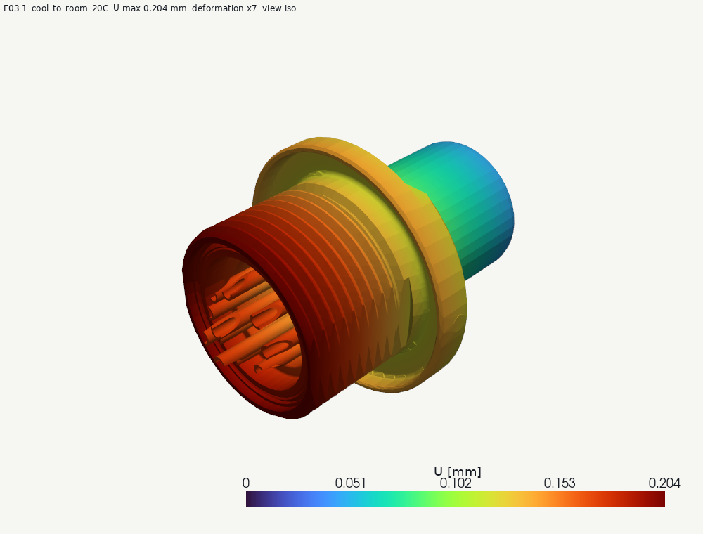
<figcaption>그림 17. E03, 20 °C(450 °C에서 냉각) 변위 크기(변형 확대). 마운트(x = −25.5 mm)에서 0, 앞쪽 끝에서 최대 0.204 mm.</figcaption>
</figure>
<figure>
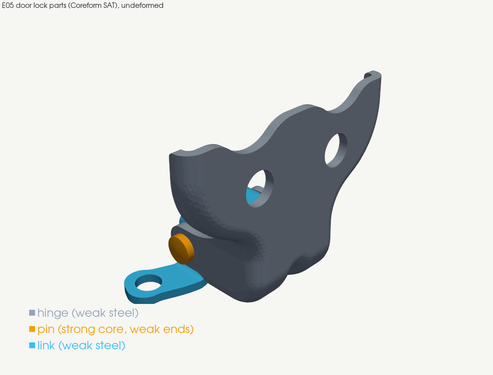
<figcaption>그림 18. E05 도어 락(Coreform SAT): 힌지, 핀(강한 코어와 약한 양끝), 링크.</figcaption>
</figure>
<figure>
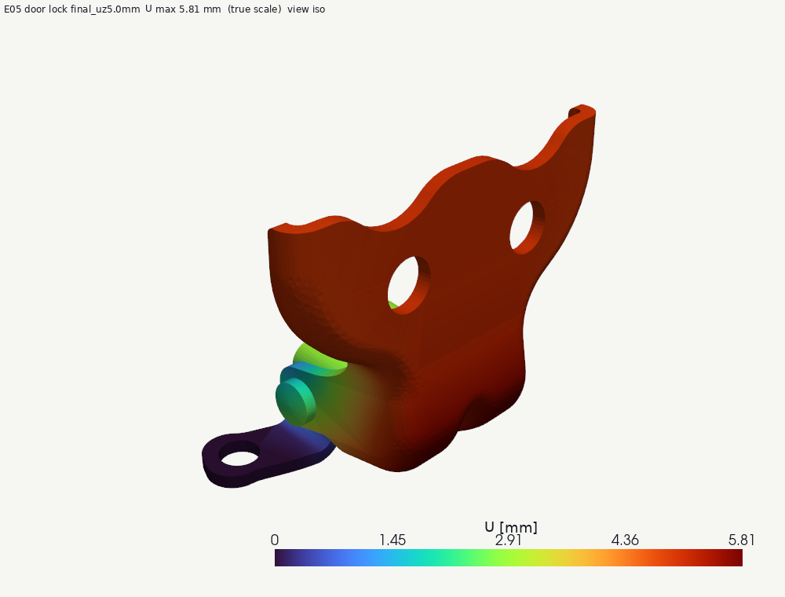
<figcaption>그림 19. E05, 힌지 u_z = 5 mm에서 변위 크기(실제 배율). 링크 고정 패드 0, 힌지 최대 5.81 mm(회전 포함). 이때 RF3 = −46.763 kN(Coreform 대비 0.39 %).</figcaption>
</figure>

<h3>3.4 기타 Coreform 구조 그림</h3>
<figure>
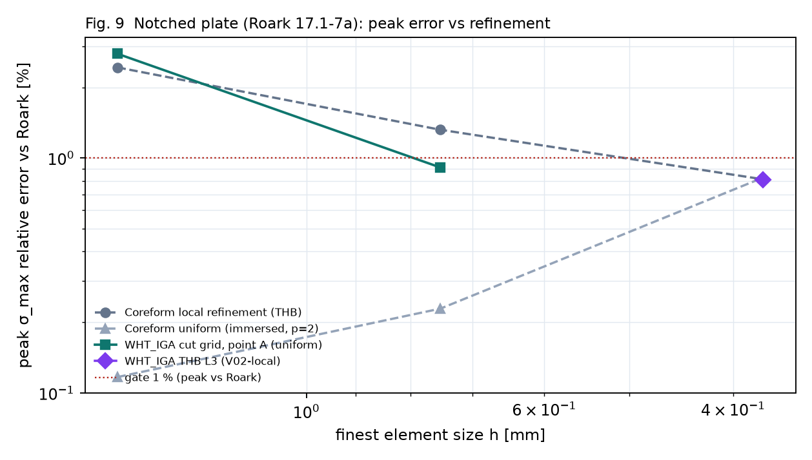
<figcaption>그림 9. 노치판(V02) 최대 주응력 피크 오차(Roark 대비). Coreform 국부 세분화와 우리 THB L3는 0.8 % 근처에서 일치한다.</figcaption>
</figure>

<h2>4. 고찰</h2>
<p>19건 중 17건이 충족, 2건이 조건부다. 이번 판에서 판정이 바뀐 케이스와 그 근거는 다음과 같다.</p>
<div class="tablewrap"><table>
<thead><tr><th>케이스</th><th>이전 판</th><th>이번 판</th><th>바뀐 이유</th></tr></thead>
<tbody>
<tr><td>V03</td><td>조건부 (하중 1.05배)</td><td>충족</td><td>우리 입력 오류 정정(E, 끝단 하중)</td></tr>
<tr><td>V07</td><td>불일치 (기울기 0.85)</td><td>충족(변형)</td><td>p=3 C⁰/P2 경로를 표준 격자에서 실행, 기울기 2.58</td></tr>
<tr><td>E03</td><td>부분 충족</td><td>충족</td><td>Coreform 증분 이력 재현의 컷백 원인(J2 잔차 바닥) 확정과 해소</td></tr>
<tr><td>V10</td><td>조건부 (기준 재정의)</td><td>충족</td><td>Kratos 일반화-α의 HHT 적용, Coreform과 0.014 % 이내</td></tr>
<tr><td>V12 T3</td><td>선형 격자 불충족</td><td>충족(방법 재현)</td><td>Coreform 방법 재현 구간이 Coreform 값을 포함(사용자 결정)</td></tr>
<tr><td>V06</td><td>조건부</td><td>조건부</td><td>원인을 절단 셀 적분으로 좁힘(Coreform 규칙 비공개)</td></tr>
<tr><td>E04</td><td>조건부</td><td>조건부</td><td>ν = 0.495로 전환, 극한 일치 0.24 %, C⁰ 64×64 +2.4 %</td></tr>
</tbody></table></div>
<div class="warnbox">
<p><b>남은 두 조건부의 성격.</b> V06과 E04 모두 우리 솔버의 결함이 아니라 Coreform 쪽 이산화 정보가 공개되지 않아 생긴다. V06은 Coreform의 절단 셀 적분 규칙, E04는 Coreform 격자(그리고 같은 정식화의 느린 수렴)다. V06에서 Coreform을 따라 과소 적분을 채택하면 L0 셀은 통과하지만 L1 셀을 놓치고, 근거 없는 선택이라 채택하지 않았다.</p>
</div>
<p>이번 작업에서 얻은 교훈이 둘 있다. 첫째, 이전 판의 두 결론(V03 “Coreform 하중 불일치”, V06 “이산 공간이 다름”)은 근거 확인이 부족했다. V03은 우리 입력 오류였고, V06의 요소·절점 수는 표면 요소를 포함한 값이었다. 독립 계산(Kratos 없는 Galerkin, 에너지 투영)으로 솔버 결함을 먼저 배제한 것이 원인 분리에 결정적이었다. 둘째, 허용치는 결과를 보기 전에 정했다(E04 ν = 0.495, V10 HHT 비교 0.1 %). E03의 허용치 변경(1e-8 → 1e-6)은 Kratos 국소 허용치에서 오는 잔차 바닥을 근거로 했고, 결과가 1e-8과 3.1e-8 상대 차이로 같음을 확인했다.</p>

<h2>5. 결론</h2>
<p>Coreform 검증 매뉴얼 14건과 예제 5건을 19개 WHT_IGA 케이스로 재현했다. 17건이 충족(V07은 p=3 변형 경로, V09는 랜덤 응답 정의 단서, V12 T3는 방법 재현), 2건(V06, E04)이 조건부다. 조건부 두 건의 남은 차이는 Coreform이 공개하지 않은 이산화 정보(절단 셀 적분 규칙, 격자)에서 온다. Kratos에 없는 기능 중 이번에 쓴 것은 HHT(Kratos core 일반화-α 계수 이식)와 잠김 방지 F̄/P0(Kratos Q1P0는 IGA 셀에서 발산)이다.</p>

<h2>6. 재현과 데이터</h2>
<p>명세: <code>tests/verification/data/*.json</code>. 케이스 문서: <code>docs/verification/*.md</code>. 인계: <code>docs/HANDOFF_20261124.md</code>. 이번 판의 진단 스크립트와 결과: <code>scripts/review_20261124/</code>. 주요 시험: <code>tests/kratos_spikes/test_p5_e03_p2_coupling.py::test_e03_p2_coreform_increment_history_replay</code>, <code>tests/kratos_spikes/test_p4_gate_g4_benchmarks.py::test_v10_vibrating_beam_hht</code>, <code>tests/unit/test_generalized_alpha.py</code>, <code>tests/unit/test_thermal_level_schedule.py</code>.</p>
<h2>부록 A. 기타 검증</h2>
<div class="tablewrap"><table>
<thead><tr><th>항목</th><th>내용</th><th>상태</th></tr></thead>
<tbody>
<tr><td>§10.4 교차검증</td><td>Kratos 경로 vs 참조 조립기, 38개 사례 + 격리 4개</td><td>42 passed; V07 ν=0.49999만 3.5e-9</td></tr>
<tr><td>§10.5 SBM 비교</td><td>Kratos SBM과 cut+ext/FCM 비교 (2D Lamé)</td><td>문서 기록(sbm_comparison.md)</td></tr>
<tr><td>V-EXP / V-EXP-C</td><td>명시적 동역학 파면과 충돌 (p=1–3)</td><td>COMPLETE_WITH_OPEN_ITEMS (정책 결정 대기)</td></tr>
<tr><td>S48 다항 초탄성</td><td>Mooney-Rivlin, Yeoh, N≤3; Cook E04 16×16 −0.07 %</td><td>31 시험 통과 (기록). Ogden 미구현</td></tr>
<tr><td>S49 P1/P2 압력</td><td>p=3 C⁰/P2 기울기 2.41 (h 0.5–0.25)</td><td>17 시험 통과 (기록)</td></tr>
</tbody></table></div>

<h2>참고 문헌</h2>
<ol class="refs">
<li>Coreform IGA 검증 매뉴얼, <code>research-cf-IGA/user-guide/verification-manual/problems/</code>.</li>
<li>Coreform IGA 예제 문제, <code>research-cf-IGA/user-guide/example-problems/</code>.</li>
<li>WHT_IGA master-plan v2.1, <code>research-cf-IGA/master-plan_v2.1.md</code>, §9 게이트 G1–G5.</li>
<li>Roark, R. J. and Young, W. C., Formulas for Stress and Strain (Kirsch and notched plate solutions).</li>
<li>Timoshenko, S. P. and Goodier, J. N., Theory of Elasticity (curved beam).</li>
<li>Simo, J. C., Taylor, R. L., Pister, K. S. (1985), mean dilatation (F̄/P0) formulation.</li>
</ol>
</main>
